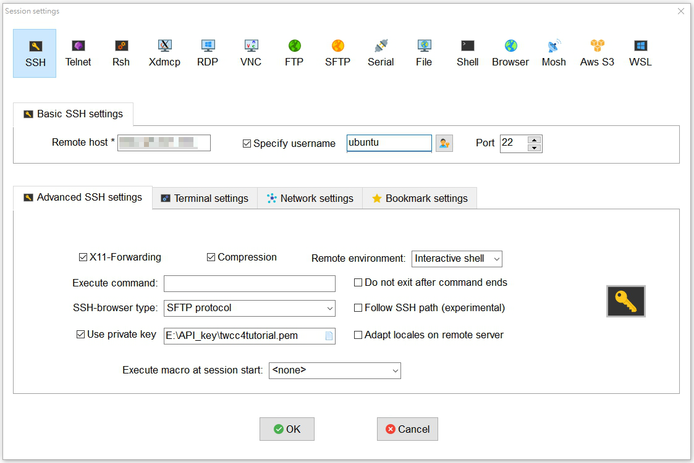

ssh connect
金鑰檔方式
因為ssh服務預設使用金鑰做登入，所以.pem/.ppk檔的登入方式，是沒問題的。
- .ppk 可以用 PuTTY.exe 做連線。
- .pem 可以用 MobaXterm/cmd 做連線。
連線時的port為22。
使用者帳號為 ubuntu系統為ubuntu / centos系統為centos / windows系統為administrator。
--
PuTTY 登入:
請先用 PuTTYgen 將.pem檔轉為.ppk檔。
參考: PuTTYgen 將 .pem 金鑰檔案轉為 .ppk 格式教學 - Office 指南
將轉換好的.ppk檔案，放到 PuTTY.exe > Connection > SSH > Auth > Private key file for authentication。
並在 PuTTY.exe > Session > Host Name (or IP address)，填入想連線的IP。
設定好了之後，按下右下角的 Open，
輸入使用者帳號名稱(比如:ubuntu系統即為ubuntu)，即可進入。
MobaXterm 登入示意圖: 
帳號密碼
但是有些人不習慣使用金鑰的方式做登入，那要怎麼把 ssh 的設定做修改呢?
首先要先建立帳號
sudo su --切換到超級使用者
adduser <new_username> --新增要用密碼登入的使用者名稱
> 系統接下來就會指示你要輸入使用者名稱、密碼、fullname...等等。
> 使用者名稱、密碼最重要，其他直接按 Enter 就可以了(會使用預設的)。sudo vim /etc/sudoers --修改文件
> 找 「# User privilege specification」的區塊
> root ALL=(ALL:ALL) ALL <--原本就有的。
> <new_username> ALL=(ALL:ALL) ALL <--新增這一行。sudo vim /etc/ssh/sshd_config --修改 ssh 服務的設定。
> 將 PasswordAuthentication no 改為 yes。 <br>
> PasswordAuthentication yesservice sshd restart --重啟sshd服務。設定完成後，就可以利用 cmd 做帳號密碼登入的連線了!!
ssh -V --確認有無 ssh 服務
ssh new_username@hostip
> 按照指示輸入密碼。也可利用 PuTTY.exe 連線。
putty.exe -ssh new_username@hostip -pw password
或是
start putty.exe -ssh new_username@hostip -pw password